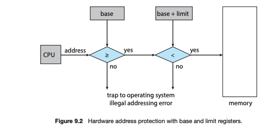
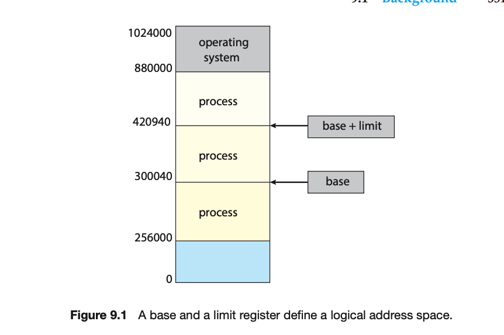
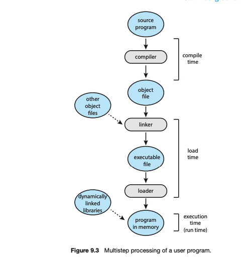
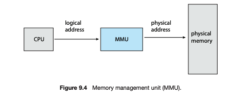
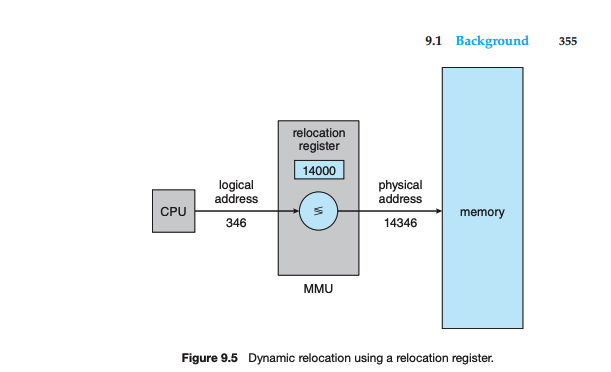

Home
9.1.1 Basic Hardware
Basic Hardware
- Main memory and CPU core registers are directly accessible by the CPU.
- Machine instructions can reference memory addresses, not disk addresses.
- Instructions and data must be in direct-access storage devices for CPU execution.
- Data not in memory must be moved there for CPU operations.
- CPU core registers are accessible within one CPU clock cycle.
- Memory access is slower, requiring a transaction on the memory bus, taking multiple CPU cycles.
- Processors may stall if data needed for instructions is not immediately available.
- To mitigate memory access delays, fast memory caches are added between the CPU and main memory.
- Cache management is automatic and hardware-implemented, without operating system control.
- Physical memory access speed and correct operation are critical for system functionality.
- Hardware must protect the operating system and user processes from unauthorized access.
- Protection is provided by hardware using base and limit registers to define accessible memory ranges.
- Base register holds the smallest legal physical memory address; limit register specifies the range size.
- CPU hardware compares every user-mode generated address with these registers to prevent unauthorized access.
- Base and limit registers are loaded only by the operating system using privileged instructions.
- Operating system has unrestricted access to its own and users' memory for management and service provision.


Pages
9.1.2 Address Binding
- Programs reside on disk as binary executable files and must be loaded into memory to run.
- They are placed within a process context, becoming eligible for CPU execution.
- During execution, the process accesses its instructions and data from memory.
- Upon termination, the process's memory is freed for other processes.
- User processes can occupy any part of physical memory, not necessarily starting at address 00000.
- The operating system manages the placement of processes in physical memory.
- User programs undergo several steps before execution, with addresses represented differently at each step:
- Symbols in source code are bound to relocatable addresses by a compiler.
- Relocatable addresses are then bound to absolute addresses by a linker or loader.
- Binding of instructions and data to memory addresses can occur at different times:
- Compile time: If the memory location is known, absolute code is generated.
- If the location changes later, the code must be recompiled.
- Load time: If the memory location is not known at compile time, relocatable code is generated.
- Final binding is delayed until the code is loaded into memory.
- Execution time: If the process can move during execution, binding is delayed until runtime.
- Special hardware is required for runtime binding.
- Most operating systems bind addresses at execution time.
- The chapter discusses various binding implementations.

Pages
9.1.3 Logical Versus Physical Address Space
Logical Adresses
- These are what the CPU "sees".
- Sometimes called virtual address.
- Set of all logical/virtual address is called logical address space.
Physical Adresses
- This is what the memory management unit sees.
- Set of all physical addresses is called physical address space.
MMU
- Memory-management unit (MMU) is a hardware device handles runtime mapping from virtual to physical addresses. (Figure)
- Essentially acts as pointer between CPU and real memory.
- Multiple different implemetations are possible.
- For instance, a relocation register in MMU adds its value to each user-generated address for memory access.
- So logical addresses would behave between 0-n, whereas MMU would map to physical adresses of k-k+n
Comparison
- Compile or load time binding results in identical logical and physical addresses.
- Execution-time binding leads to different logical (virtual) and physical addresses.
- Memory-management unit (MMU) is a hardware device handles runtime mapping from virtual to physical addresses. (Figure)£
- User programs deal with logical addresses; hardware converts these to physical addresses.
- Logical addresses are mapped to physical addresses before use.
- Logical address space is separate from physical address space, crucial for memory management.


Pages
9.1.4 Dynamic Loading
- Previously, entire programs and data had to be in memory for execution, limiting process size to physical memory capacity.
- Dynamic loading overcomes this by loading routines on demand, rather than at process start.
- Main program is loaded into memory, while other routines remain on disk in a relocatable format.
- When a routine calls another, it checks if the latter is loaded; if not, a relocatable linking loader loads it and updates address tables.
- This selective loading is beneficial for handling large code segments needed only occasionally, like error routines.
- User responsibility is to design programs for dynamic loading, with the operating system potentially providing supportive libraries.
Pages
9.1.5 Dynamic Linking and Shared Libraries
- Dynamically linked libraries (DLLs) are linked at runtime, contrasting with static linking where system libraries are pre-bound at compile time.
- Dynamic linking defers the linking of libraries to execution time, saving memory by sharing libraries like the C standard library across programs.
- When a program uses a DLL routine, the loader locates and, if necessary, loads the DLL into memory, adjusting program references accordingly.
- Updates to DLLs, such as bug fixes, automatically propagate to all programs using the DLL without the need for recompilation.
- Version information in DLLs ensures compatibility, allowing multiple versions to coexist and be used according to program compilation specifics.
- Dynamic linking and shared libraries typically require operating system mechanisms for checking routines in memory spaces and managing shared access.
Pages